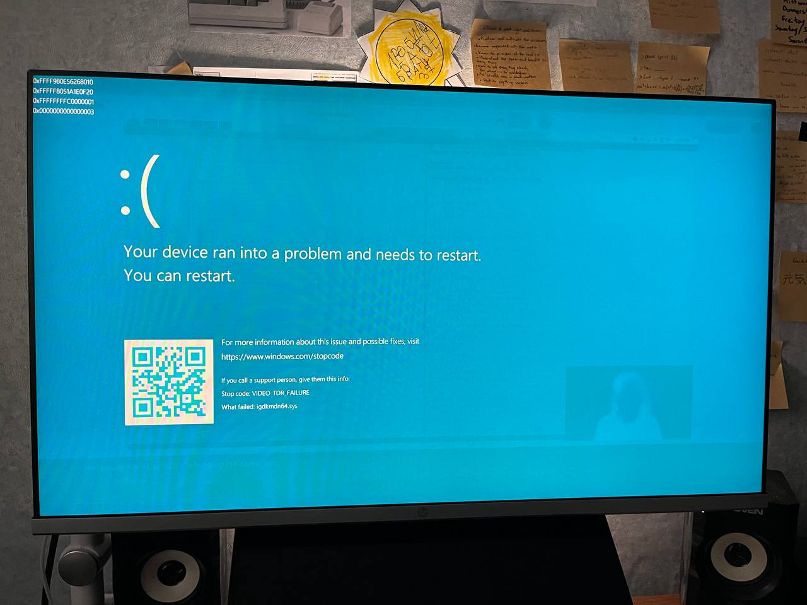

I first tried gnu/linux and eventually have switched to this OS in 2024, initially started with arch (which is unusual i guess since most of the people start learning linux from ubuntu/debian), i was learning arch for one year, and i was pretty satisfied with it, and i guess this distro is one of the best for learning how linux and operating systems work in general, since you have to do most of the stuff, which is installing the OS, configuring it (which is the strongest part of arch in my opinion since it dont have useless packages preinstalled) and debugging with your own hands, which is cool and i really like it. But at some point i was just tired of this 'linux evenings', for example, my laptop's sound card driver have problems in separating sound buffers into two channels for internal speakers and headphones when you plug them into mini-jack socket, and all of the output was going through both speakers and headphones (which happens only on linux). Well, maybe this problem is not a big deal, since i can just plug usb headphones or bluetooth ones (or just debug drivers), but it's just annoying, and many small details in linux was just annoying, which got me go back to use windows for now.
But, the funny part is, i have struggles with windows too. Im using windows 11 now, which i guess have better look and feeling than windows 10 (and that's basically all of the differences between this versions), and for the most part i like that windows have stable, robust desktop environment. Well, in order to make windows usable, you need to make a lot of tweaks and hacks (which i get used to since using arch) to remove annoying stuff, such as ads, web search in start menu, spyware, windows updates, useless taskbar icons, microsoft edge and so on and so on. And only after that i was having OS that i can use. But even with tweaks windows is annoying. For example, at some point i was having explorer's system error (see the picture below).
Or my laptop's Intel drivers (again, but on windows and it was graphics) have error for some unknown reason, probably because of the hdmi connection (picture below).
Another error, but this time with Intel's wifi card...
Well, at this part you may think that its just Intel's drivers, since both linux and windows have issues with it, and i may agree with you, but it represents that we have been using horrible software on the OS level. Besides, i think this drivers problem is one of the most popular problems with current operating systems, it happens all the time! Think about it, nvidia, amd, intel, all of them have issues with drivers, OS initialize these drivers in wrong way, and OS can initialize even wrong drivers that are not compatible with current hardware! Or it can just crash because device handle can return a wrong value, etc...
So, out of this frustration i have come to decision to make my own operating system that would be actually usable, minimal and robust. I know, make an entire operating system sounds like a miracle, but I tend to believe that this will happen anyway, and project like this would help me learn how to actually work with computers on lowest level possible.